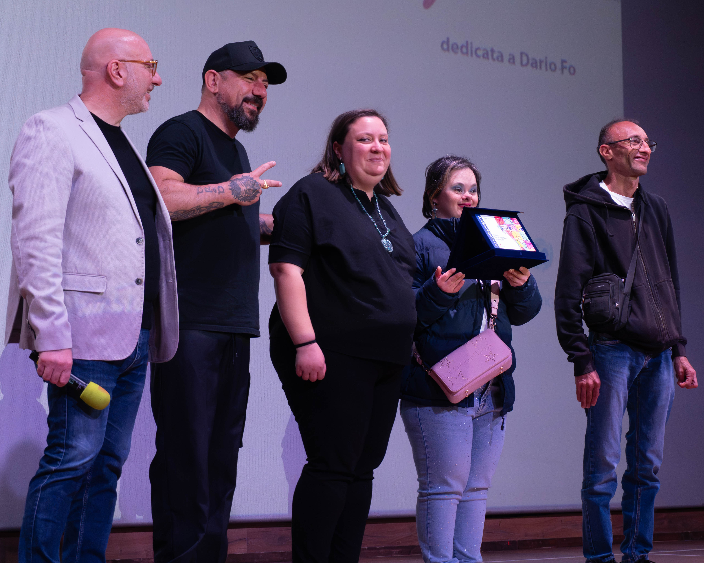
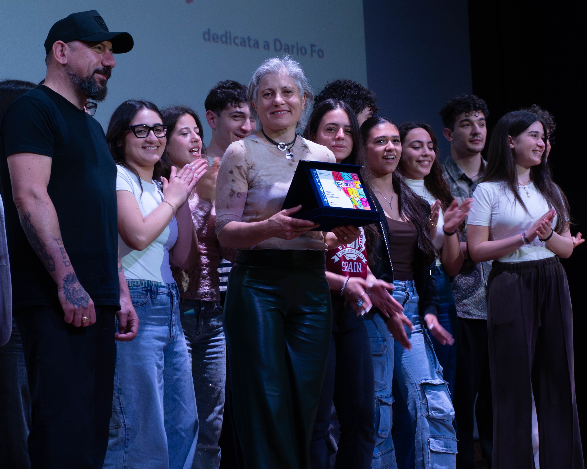
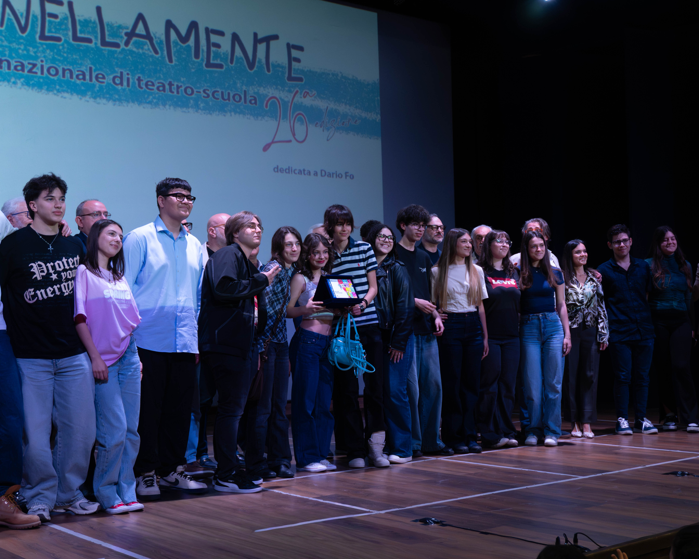
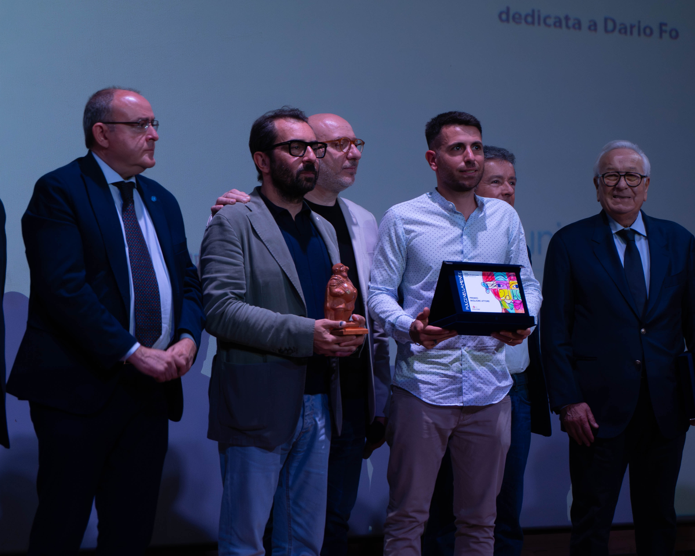
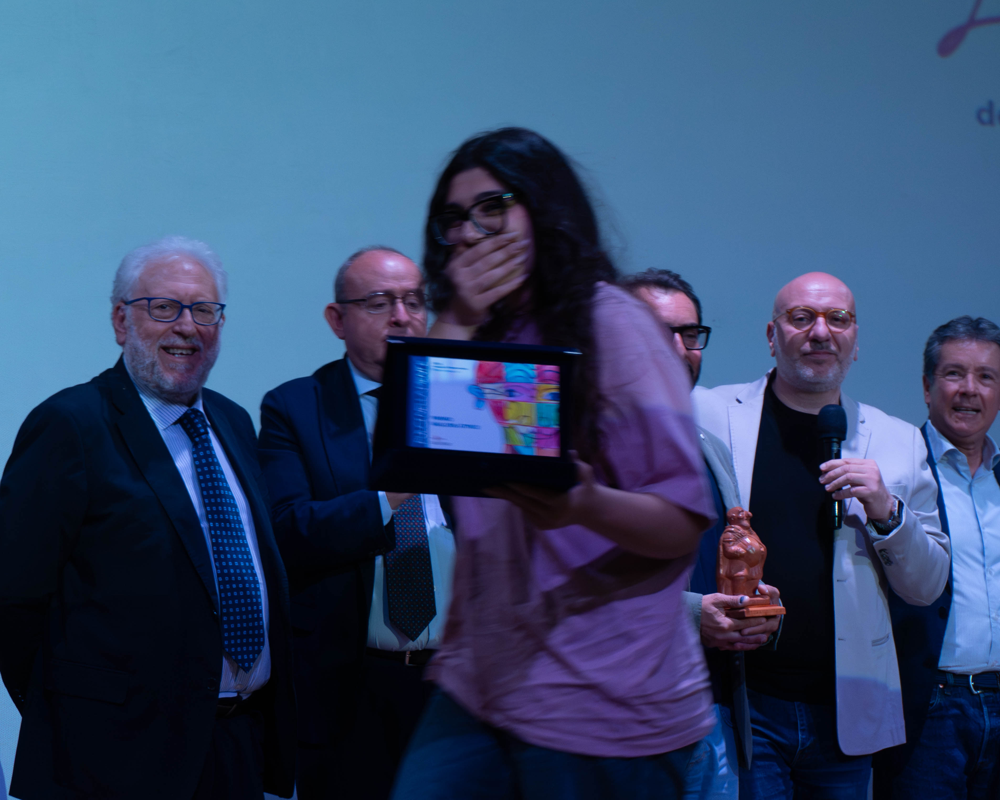
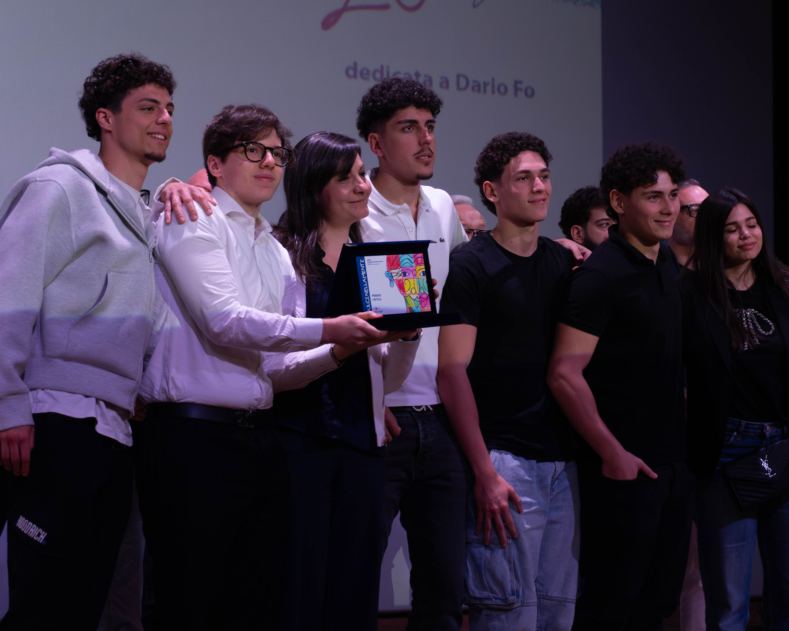
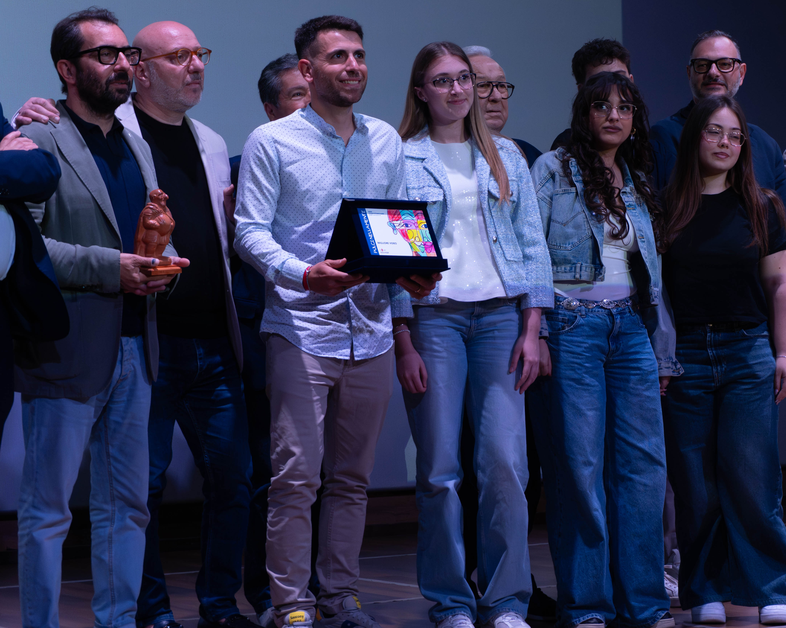
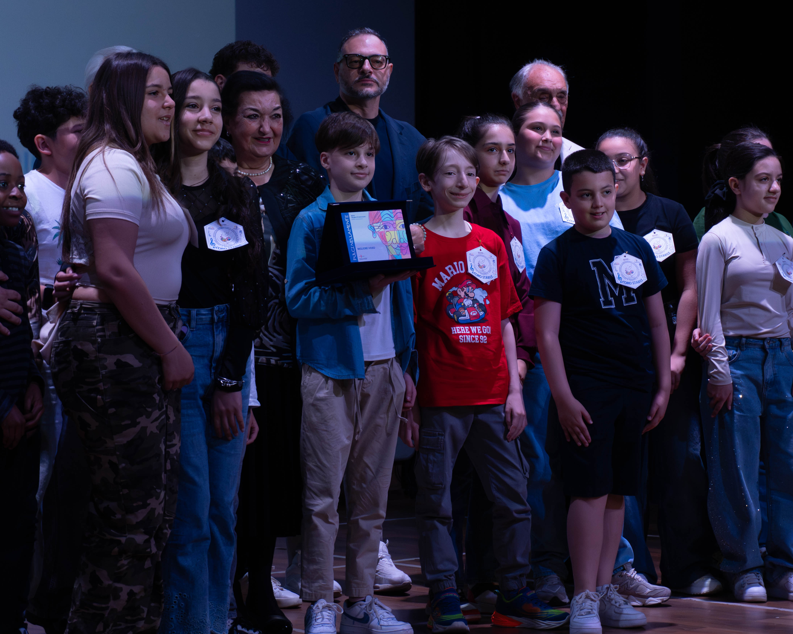
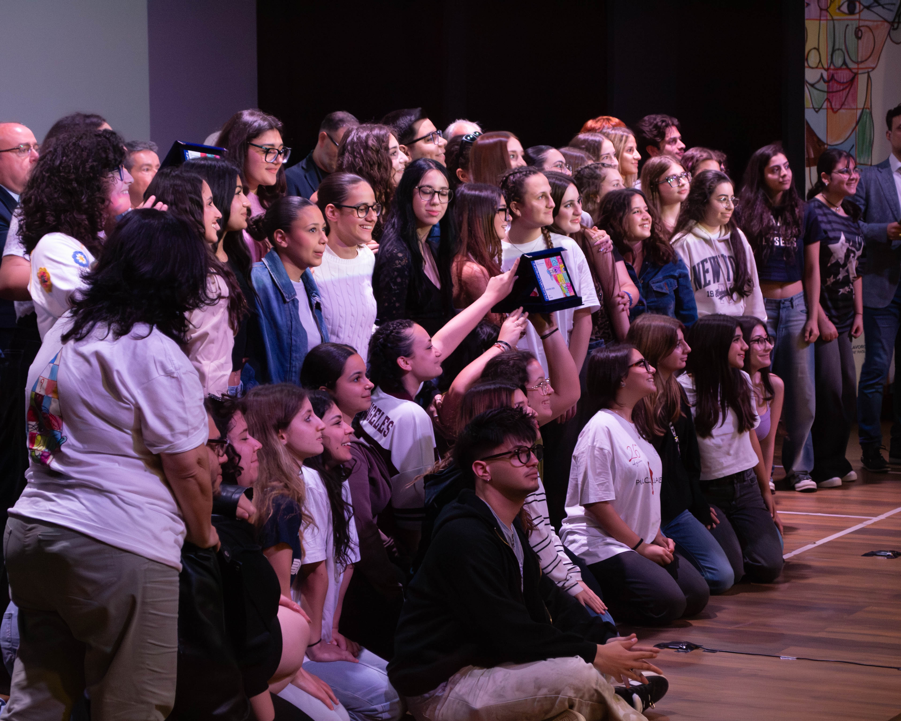

PREMIO PARTECIPAZIONE ESEMPLARE

Centro "Zenit" per persone con disabilità - Melito di Napoli (NA)
Pullecenella: 'o vico, 'a corte e 'a ffiera
PREMIO MIGLIORI COREOGRAFIE

Liceo "Giordano Bruno" – Arzano - Grumo Nevano (NA)
Il viaggio e il viaggiatore!
MIGLIORE SCENEGGIATURA

Liceo Scientifico "Fermi" - Aversa (CE)
A riveder le stelle
MIGLIORE ATTORE

Francesco Petrone del Liceo Classico e delle Scienze Umane "F. Durante" - Frattamaggiore (NA)
Oh, my go(l)d!
MIGLIORE ATTRICE

Elisa Mangano del Liceo Statale “E. Ainis” – Messina
Le Troiane
PREMIO CRITICA

Liceo Classico e Musicale "Cirillo" - Aversa (CE)
Mi rivolto dunque siamo
PREMIO CRITICA

Liceo Classico e delle Scienze Umane "F. Durante" - Frattamaggiore (NA)
Oh, my go(l)d!
PREMIO PUBBLICO

I.C. "Romeo-Cammisa" - Sant’Antimo (NA)
Se il cuore avesse una voce
PREMIO PULCINOPERA

Liceo Statale “E. Ainis” – Messina
Le Troiane